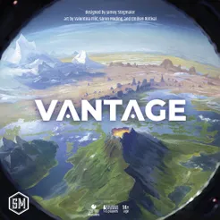
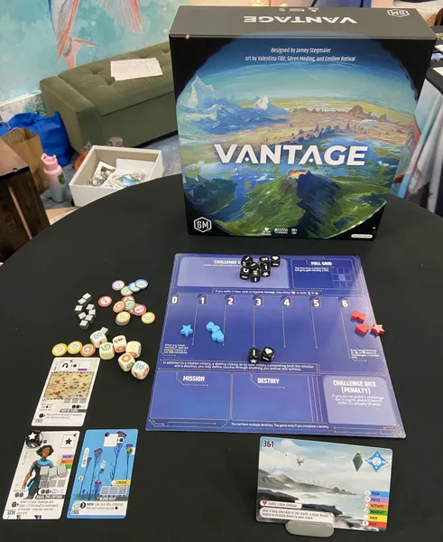
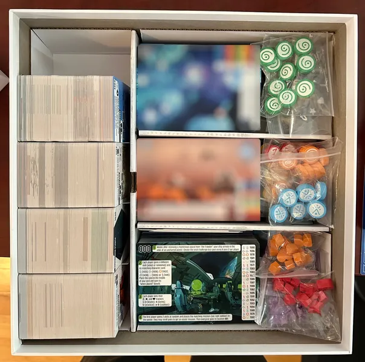
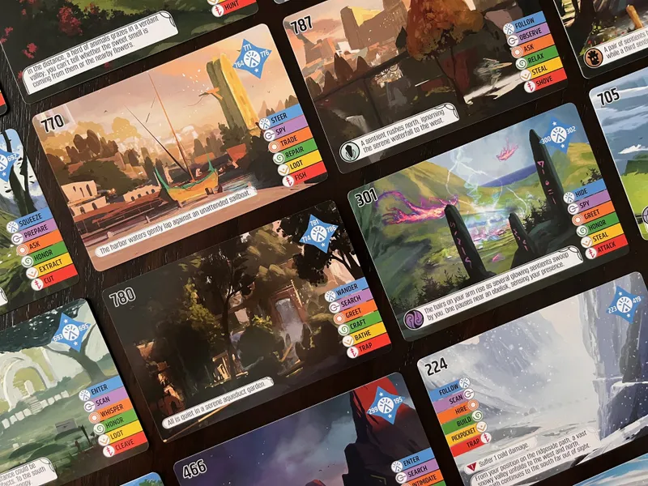
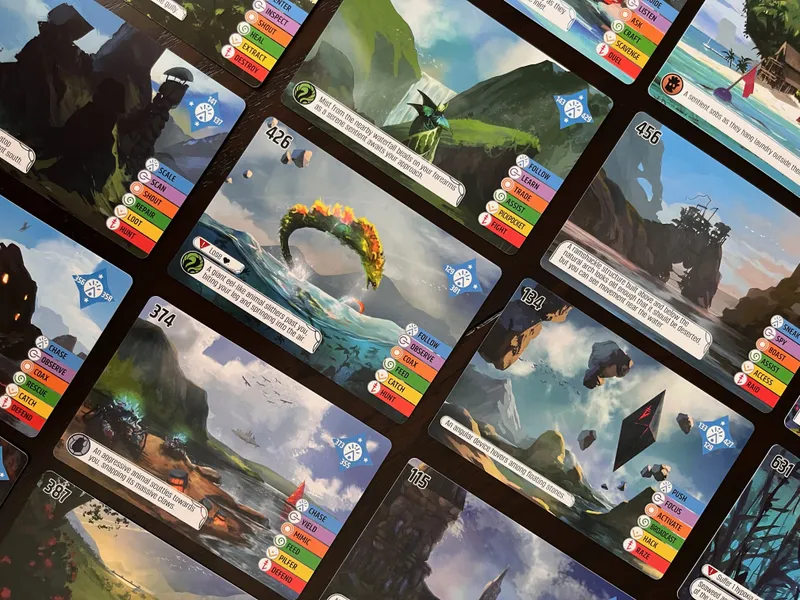
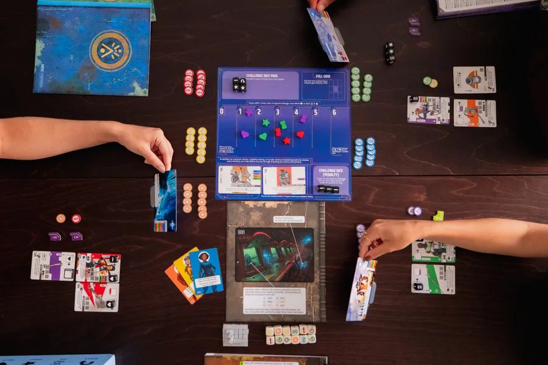

Publishing Info
- Published by: Stonemaier Games, Feuerland Spiele, Keep Exploring Games, and Maldito Games
- Developed by: Garrett Feiner and Travis Willse
- Released: 2025
Game Categories
- Genre: Adventure
- Perspective: First-person
- Player(s): 1-6
- Gameplay: Thematic
Description
Vantage is an open-world, co-operative, non-campaign adventure game that features an entire planet to explore, with players communicating while scattered across the world. With nearly eight hundred interconnected locations on four hundred cards and over nine hundred other discoverable cards, the world is your sandbox. [...]





Quote
There's a beauty to getting lost, especially within the safe circle of a game. Vantage understands that. This is a game where a group's natural first objective might be to link up, to find one another. But it's also a game where your navigation depends on glimpses and descriptions. More than once, one of my fellow explorers has stumbled onto a landmark that I had viewed only minutes earlier. Like vessels under cover of darkness, we had slipped past one another, reaching out but never brushing fingers.
— Life in First-Person (a Space-Biff! review)